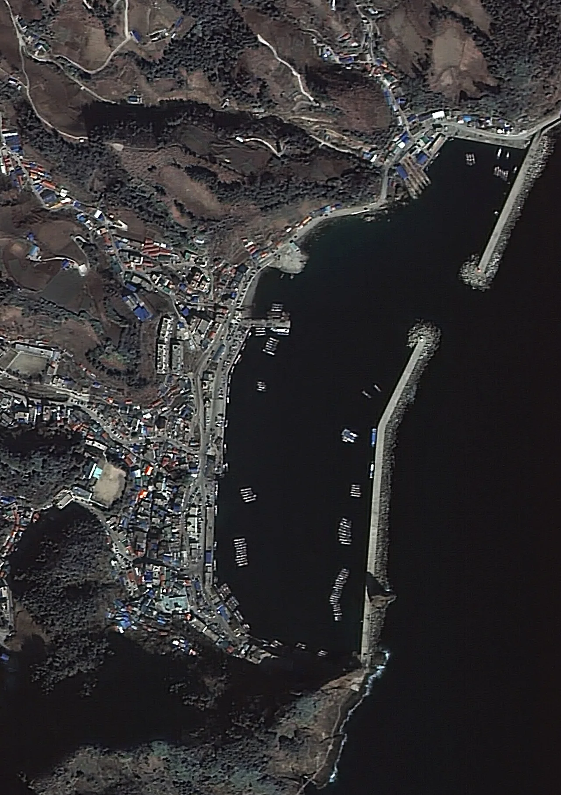
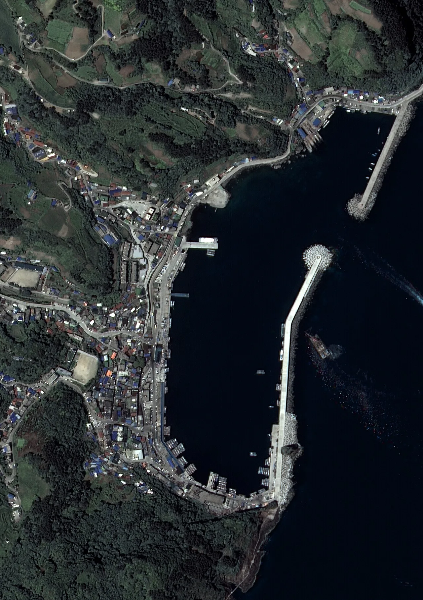

▲ 울릉도로 차를 가져가려면 여객선이 아니라 화물 선적을 이용해야 한다 ⓒ 한국관광공사
1. 여객선에는 차를 실을 수 없다
먼저 확인하고 넘어가야 할 것이 있습니다. 울릉도로 가는 일반 여객선은 차량을 싣지 않습니다. 대저페리는 안내 페이지에 "차량 선적은 불가합니다"라고 명시하고 있습니다.
2020년 이전에는 사람과 차를 함께 나르는 배가 있었습니다. 지금은 그 운항이 중단됐습니다. 그래서 차를 가져가려면 차는 화물로 따로 부치고, 사람은 여객선을 타는 방식이 됩니다.
이 구조를 모르고 예약하면 일정이 어긋납니다. 차와 사람이 같은 시각에 도착하지 않을 수 있기 때문입니다.
배편 자체도 두 갈래입니다. 쾌속 여객선은 포항에서 울릉까지 대략 2시간 50분대가 걸립니다. 반면 차량을 싣는 울릉크루즈는 포항 영일만항을 밤 11시에 출발해 다음 날 오전 6시 30분경 울릉 사동항에 닿는 야간 운항 방식입니다.
즉 사람이 쾌속선을 타고 낮에 들어가면, 차는 그 전날 밤에 미리 부쳐 두는 그림이 됩니다. 반대로 야간 배에 사람도 함께 타는 방법도 있습니다. 어느 쪽이든 차와 사람의 도착 시각을 따로 계산해야 합니다.
2. 유일한 방법 — 포항에서 화물로
차량 선적은 울릉크루즈가 운영하는 뉴씨다오펄호를 통해 이뤄집니다. 노선은 포항과 울릉을 잇습니다.

▲ 포항 여객선 터미널. 울릉도 차량 선적의 출발점이다 ⓒ 한국관광공사
선적 마감 시각이 있습니다. 포항에서는 출항 1시간 전, 울릉도에서는 출항 30분 전까지 선적을 마쳐야 합니다. 현장 상황에 따라 변동될 수 있고, 마감 시각 전에 도착하지 못한 차량은 실을 수 없습니다.
차량등록증은 반드시 지참해야 합니다. 없으면 절차가 진행되지 않습니다.
3. 요금표 — 중형 승용차 편도 17만 8천 원
| 차종 | 편도 요금 |
|---|---|
| 국내 경차 | 129,400원 |
| 국내 중형 | 178,000원 |
| 국내 대형 | 209,700원 |
| 국외(수입) 경차 | 201,200원 |
| 소형버스 | 411,200원 |
| 대형버스 | 822,800원 |
여기에 계근비가 붙습니다. 2024년 7월 15일부터 5,000원으로 인상됐습니다. 계근은 차량 무게를 다는 절차입니다.
눈여겨볼 것은 수입차 요금입니다. 국외 경차가 20만 1,200원으로, 국내 대형(20만 9,700원)과 비슷한 수준입니다. 같은 크기여도 국내차와 수입차의 요금 구분이 따로 있습니다.
왕복으로 계산하면 중형 기준 35만 6,000원입니다. 여기에 사람 몫의 여객 운임이 따로 붙습니다.
4. 아예 실을 수 없는 차
요금을 낼 의사가 있어도 선적이 거부되는 차가 있습니다.
| 구분 | 기준 |
|---|---|
| 차량 높이 | 약 4.5m 이하 |
| 적재 중량 | 최대 25톤까지 |
| 스포츠카 | 선적 불가 |
| 전기차 | 충전율 50% 초과 시 불가 |
| 전기차(사고 이력) | 선적 불가 |
전기차 조건이 특히 까다롭습니다. 충전율 50%를 넘으면 실을 수 없습니다. 배터리 화재 위험 때문에 선사들이 충전율 상한을 두는데, 울릉 노선의 기준은 국내 다른 항로보다 낮은 편입니다.
즉 전기차로 울릉도에 가려면 계산이 하나 더 늘어납니다. 포항까지 달려온 뒤 배터리를 50% 아래로 맞춰야 하고, 울릉도에 내린 뒤 그 잔량으로 섬을 돌아야 합니다. 섬 안 충전 인프라를 미리 확인하지 않으면 곤란해집니다.
스포츠카가 안 되는 이유는 지상고입니다. 램프를 오르내릴 때 하부가 닿기 때문입니다. 차고가 낮은 세단도 현장에서 문제가 될 수 있으니 사전에 문의하는 편이 안전합니다.
5. 그래서 왜 차를 가져가나
답은 일주도로에 있습니다. 울릉도 일주도로는 1963년에 사업이 확정됐지만 완공은 2018년이었습니다. 55년이 걸린 도로입니다.

▲ 위성에서 본 울릉도 저동항 일대. 산과 바다 사이 좁은 띠에 마을과 도로가 붙어 있다 ⓒ Wikimedia Commons
이 도로가 뚫리기 전까지 울릉도 여행은 배를 갈아타는 일이었습니다. 지금은 섬을 한 바퀴 돌 수 있습니다. 다만 도로 폭이 좁고 경사와 급커브가 많아, 큰 차일수록 운전이 부담스럽습니다.
그래서 요금표의 경차 항목이 다시 보입니다. 12만 9,400원이라는 값은 중형보다 4만 8,600원 쌀 뿐 아니라, 섬 안에서 다니기에도 유리합니다.

▲ 해안선을 따라 난 도로가 마을과 항구를 잇는다. 폭이 좁고 굽이가 많아 차종 선택이 중요해진다 ⓒ Wikimedia Commons
6. 자차 선적 vs 현지 렌터카
첫째, 체류 일수로 갈립니다. 왕복 선적비가 중형 기준 35만 원대입니다. 2박 3일이라면 현지 렌터카가 대개 저렴합니다. 일주일 이상 머물거나 짐이 많다면 자차가 유리해지는 구간이 생깁니다.
둘째, 짐의 부피가 변수입니다. 캠핑 장비나 낚시 도구처럼 부피가 큰 짐을 가져간다면, 애초에 렌터카로는 감당이 안 됩니다. 차를 싣는 값에 짐 운반비가 포함돼 있다고 보면 계산이 달라집니다.
셋째, 시간표를 맞춰야 합니다. 차와 사람이 다른 배를 타므로 도착 시각이 어긋날 수 있습니다. 첫날 일정은 차 없이 움직이는 것으로 잡아 두는 편이 안전합니다.
넷째, 전기차라면 한 번 더 생각해야 합니다. 충전율 50% 제한과 섬 내 충전 여건을 함께 감안하면, 이 노선에서는 내연기관차가 확실히 편합니다.
정리하면 이렇습니다. 울릉도는 "차를 가져갈 수 있느냐"가 아니라 "어떤 차를, 얼마에, 어떤 조건으로 가져갈 수 있느냐"를 따져야 하는 곳입니다. 그리고 그 조건표에서 가장 먼저 걸리는 항목은 값이 아니라 차종과 배터리 잔량입니다.